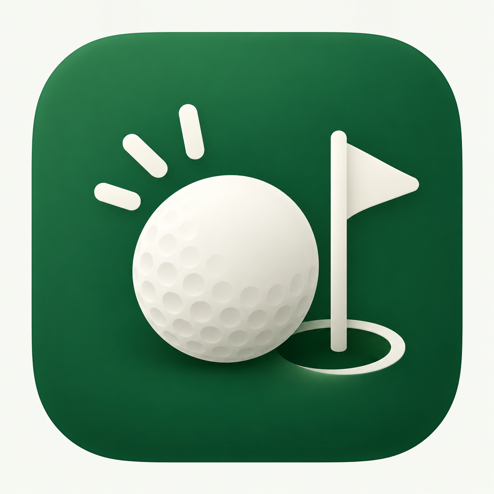
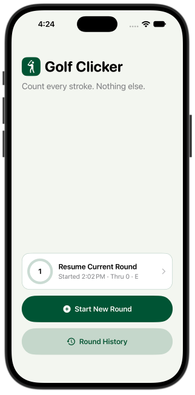
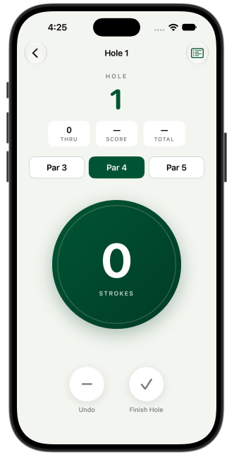
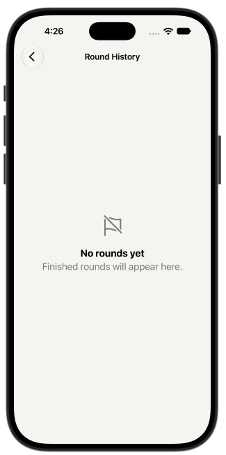
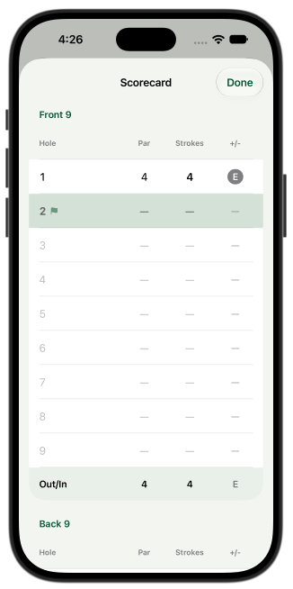
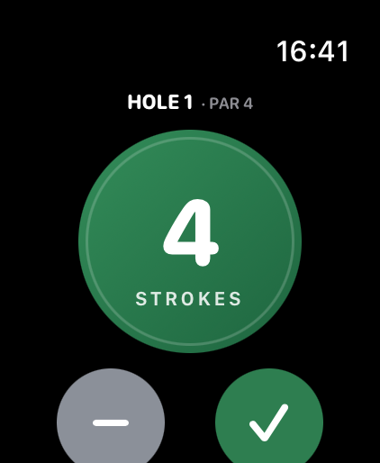
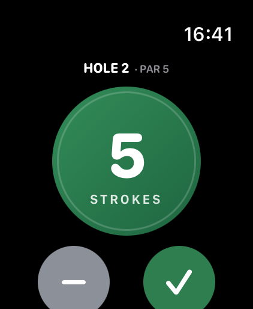
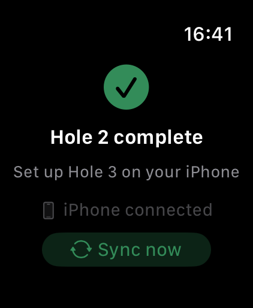

| Area | Tooling |
|---|---|
| Apps | Swift, SwiftUI (iOS 17+, watchOS 11+) |
| Persistence | SwiftData (local only, cloudKitDatabase: .none) |
| State | Observation (@Observable) |
| Phone and watch sync | WatchConnectivity |
| Lock Screen and widgets | ActivityKit + WidgetKit |
| Testing | XCTest |
| Haptics | sensoryFeedback |
| Component | Responsibility |
|---|---|
RoundStore.swift |
Single entry point for every mutation. Each change is saved immediately and rolled back on failure, so on-disk state is never half-updated. Notifies observers after each commit (watch sync, Live Activity). |
GolfRound / GolfHole (SwiftData) |
Round to 18 holes with cascade delete. A revision counter is bumped on every change for sync conflict resolution. |
PhoneSyncCoordinator.swift |
Pushes a RoundSnapshot via updateApplicationContext (durable, latest wins) plus sendMessage when reachable. Dedupes watch events by id; the last 300 ids are persisted. |
WatchStore.swift / WatchSyncCoordinator.swift |
Watch-local state persisted to UserDefaults. Events go through transferUserInfo (durable queue, older queued stroke events for the same hole are collapsed) and sendMessage (instant). |
RoundActivityController.swift + RoundLiveActivity.swift |
Keeps exactly one Live Activity in step with the active round (ActivityKit + WidgetKit). |
+1 deltas, so a duplicated or replayed event cannot double-count.revision are ignored on the watch. If the watch's local strokes are newer than the phone's, it keeps them and resends.Start New Round, Round History, and a "Resume Current Round" card with a circular 18-hole progress ring and "Started 1:05 PM · Thru 7 · +2". The card has custom swipe-to-delete (short swipe reveals the trash button, long swipe deletes, Mail-style). Starting a new round while one is active asks whether to resume or replace; the replaced round is still saved to history.
Big hole number; Thru / Score / Total pills; a Par 3 / 4 / 5 selector; and a large 260-pt circular stroke button with haptics (disabled with "SELECT PAR" until par is chosen). A live "2 over par" / "At par" line sits with Undo and Finish Hole buttons. After hole 18, a round-complete screen shows total and score relative to par, followed by a Finish Round confirmation.
Front 9 / Back 9 sections with Out/In subtotals and a total row. Color-coded +/- badges (red under par, blue over par). Tapping a completed hole opens an edit sheet to fix its par or strokes, and totals recalculate. Accessibility labels read scores by name (Birdie, Bogey, Eagle…).
Completed rounds, newest first, showing date, start time, holes played, duration, total strokes and +/- par. Swipe to delete. Tap a round to see its full scorecard with a summary banner.
The same big-button counter, sized relative to the watch screen so it fits every case size, with Undo and Finish Hole buttons and haptics. Shows "Hole 5 complete — Set up Hole 6 on your iPhone" until par is picked on the phone. Keeps counting when the phone is unreachable and offers a "Sync now" button.
A Lock Screen banner and Dynamic Island (compact, expanded and minimal views) showing the current hole, par, strokes and "Thru n · total · +/-". It updates after every change, including watch taps while the iPhone app is in the background, and dismisses itself 15 minutes after the round finishes.
Custom "fairway green" theme; every color adapts to light and dark mode.
| Milestone | Status |
|---|---|
| iPhone stroke counter, scorecard, history | Done |
| Apple Watch companion + offline-tolerant sync | Done |
| Live Activity / Dynamic Island | Done |
| 20 unit tests (store logic + sync idempotency) | Done |
| On-device testing on a real iPhone + Apple Watch | In progress |
| App Store release | Planned |